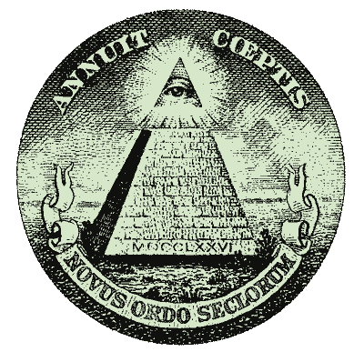
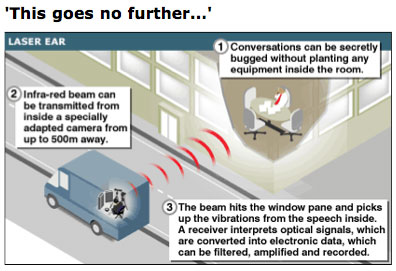
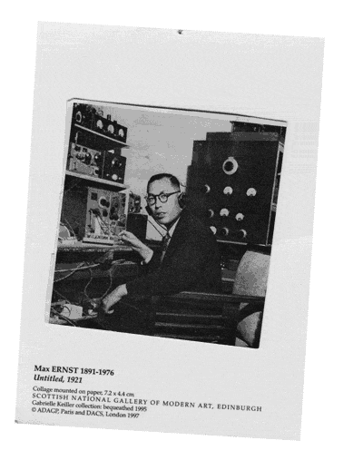

CIABASE 1/96 data dump on "Casolaro"
DOMESTIC OP
80-92 ADDITIONAL 5 QUESTIONS RE ENRON, PROMIS AND DANNY CASOLARO. FBI SPECIAL AGENT GATES STATED CASOLARO HAD SEVERAL CONVERSATIONS WITH ROBERT BOOTH NICHOLS WHO [POSSIBLY] HAS TIES WITH ORGANIZED CRIME AND COVERT INTEL OPS. IMPORTANT QUESTIONS REMAINING RE DEATH OF CASOLARO LISTED. HOUSE JUDICIARY COMMITTEE. (1992). THE INSLAW AFFAIR 9,69-70
80-92 CLAIMS RE DISTRIBUTION OF INSLAW AND PROMIS OR SOFTWARE BY CHARLES HAYES, ARI BEN-MENASHE, JUVAL AVIV, AND LESTER COLEMAN. VARIOUS CLAIMS BY SOURCES RE PROMIS OR "PROMISE" SOFTWARE BEING PROVIDED TO FOREIGN GVTS INCLUDING CANADA, ISRAEL, SINGAPORE, IRAQ, EGYPT, AND JORDAN. LESTER COLEMAN SAID HE IN 88 WORKED WITH EURAME TRADING COMPANY, LTD, A DEA PROPRIETARY COMPANY IN NICOSIA, CYPRUS. COLEMAN SAID HE FOUND DEA USING TRADING COMPANY TO SELL COMPUTER SOFTWARE CALLED "PROMISE" OR "PROMIS" TO DRUG CONTROL ABUSE AGENCIES IN CYPRUS, PAKISTAN, SYRIA, KUWAIT AND TURKEY. COLEMAN HAD BEEN CONTACTED BY DANNY CASOLARO ON 8/3/91. HOUSE JUDICIARY COMMITTEE. (1992). THE INSLAW AFFAIR 55,64-69
90-92 JACK ANDERSON LOOKING INTO DEATH OF DANNY CASOLARO, WHO DIED 8/10/91 IN MARTINSBURG W.VA. WHILE INVESTIGATING THE "OCTOPUS." HE FELT HE HAD UNCOVERED A VAST BANKING, POLITICAL AND BUSINESS NET WHOSE ACTIVITIES WOULD HAVE EXPLAINED MANY MYSTERIES - BCCI, THE INSLAW CASE, IRAN-CONTRA AND OTHERS. ANDERSON SAYS HE HAS "EXCLUSIVE NEW DETAILS" THAT RAISES QUESTIONS. ANDERSON HAS A LIST OF NAMES ROLLED UP AND TUCKED IN CASOLARO'S BOOT. THOSE TO APPEAR ON ANDERSON'S TV PROGRAM WILL INCLUDE PRODUCERS OF FORTHCOMING HBO FILM ON CASOLARO'S LIFE, AND JOHN CONNOLLY, AN INVESTIGATIVE REPORTER. WASHINGTON TIMES 8/11/92 A6
91 INVESTIGATIVE REPORTER DANNY CASOLARO WAS FOUND DEAD IN A MARTINSBURG, WV HOTEL ON 10 AUG 91. SLASHED WRIST SUGGESTED SUICIDE AS MOTIVE OF DEATH, BUT FAMILY REMAINS SUSPICIOUS. PRIOR TO HIS DEATH CASOLARO RECEIVED THREATENING PHONE CALLS; HE APPEARED UPBEAT; NO PAPERS OR NOTES WERE FOUND IN CAR OR HOTEL ROOM (UNUSUAL FOR HIM); BLOOD AND URINE CONTAINED ANTIDEPRESSANT (HE HAD NO SUCH PRESCRIPTION); A BLADE FOUND IN BATHTUB WAS NOT SOLD LOCALLY. IN ADDITION, THE VILLAGE VOICE (NEW YORK) AND FBI BOTH RECEIVED PHONE CALLS INDICATING CALLER KNEW CASOLARO WAS DEAD PRIOR TO DISCOVERY OF HIS BODY. CASOLARO HAD TIES WITH MICHAEL RICONOSCIUTO AND OTHER PEOPLE WHO SUBSCRIBE TO CONSPIRACY STORIES. THE NATION 10/28/91 511-516
91 THE BODY OF JOSEPH CASOLARO, AN INVESTIGATIVE REPORTER WHO WAS FOUND DEAD IN AUG 91, WAS EMBALMED PRIOR TO RECEIVING PERMISSION FROM THE FAMILY TO DO SO. LIES OF OUR TIME 11/91 5-6
92 DEMOCRATS ON HOUSE JUDICIARY ASKED JUSTICE DEPT TO NAME AN INDEPENDENT COUNSEL TO INVESTIGATE DEATH OF DANNY CASOLARO. WASHINGTON POST 9/11/92 D5
92 JACK ANDERSON "SUSPICIOUS DEATH HANGS OVER INSLAW CASE." DRAFT HOUSE JUDICIARY REPORT DETAILS STRING OF SUSPICIOUS CIRCUMSTANCES SURROUNDING APPARENT SUICIDE OF JOSEPH DANIEL CASOLARO. COMMITTEE VOTED ALONG PARTY LINES TO ADOPT REPORT WHICH RECOMMENDS A.G. BARR SEEK APPOINTMENT OF AN INDEPENDENT COUNSEL TO CONDUCT PROBE JUSTICE DEPT OFFICIALS IN ALLEGED CONSPIRACY TO STEAL PROMIS SOFTWARE FROM INSLAW INC. FBI FIELD AGENT THOMAS GATES HAD SUGGESTED INQUIRY INTO DEATH BASED ON INFO FROM HIS EARLIER CONTACTS WITH CASOLARO AND CASOLARO'S POSSIBLE CONTACTS WITH A MEMBER OFF ORGANIZED CRIME. WASHINGTON POST 8/31/92 C12
92 REVAMPED LAWSUIT FILED BY FAMILY OF JOSEPH "DANNY" CASOLARO. TRI-STATE NEWSPAPER, HAGERSTOWN, MARYLAND, 12/28/92
93 ELLIOT RICHARDSON SAYS JUSTICE DEPT FAILED TO PURSUE LEADS IN INSLAW INVESTIGATION. HAMILTON SAID JUSTICE DEPT DID NOT INTERVIEW FRIENDS AND ASSOCIATES OF CASOLARO. WASHINGTON TIMES 6/21/93 A3
93 JUSTICE DEPT REJECTS INSLAW CHARGES. REPORT OF SIX-MONTH PROBE BY RETIRED FEDERAL JUDGE NICOLAS BUA, CONCLUDES, ALL ACTIONS BY DEPT EMPLOYEES WERE MADE IN GOOD FAITH. 267-PAGE REPORT A COMPLETE REPUTATION OF ALLEGATIONS BY HAMILTONS. THEORY CAME TO INCLUDE 81 RELEASE OF HOSTAGES FROM IRAN AND 91 MURDER OF A FREELANCE JOURNALIST. BUA ATTACKS CREDIBILITY OF MOST OF INDIVIDUALS RELIED ON BY HAMILTONS: MICHAEL RICONOSCIUTO, IS A CONVICTED DRUG DEALER WHO GAVE FIRST THIS TYPE INFO TO A LYNDON LAROUCHE PUBLICATION. BUA SAYS ARI BEN MENASHE, ACKNOWLEDGED HE MISLEAD HAMILTONS, TO GAIN PUBLICITY FOR A BOOK HE WRITING, THAT HE HAD PERSONAL KNOWLEDGE OF BRIAN SELLING PROMIS SOFTWARE TO ISRAEL AND IRAQ. BUA REJECTS CHARGES THAT DANIEL CASOLARO WAS MURDERED BECAUSE HE WAS UNCOVERING EVIDENCE OF AN "OCTOPUS" CONSPIRACY. PHYSICAL EVIDENCE IN CASOLARO'S HOTEL "STRONGLY SUPPORTS" POLICE CONCLUSION THAT IT WAS SUICIDE. WASHINGTON POST 6/18/93 A4
93 THE UNCLASSIFIED ON RICONISCIUTO, MENASHE, CASOLARO, ETC. UNCLASSIFIED 11/93 14-15
94 INSLAW BODY COUNT RISING? HOUSE JUDICIARY COMMITTEE WAITING JUSTICE REPORT RE PROMIS SOFTWARE. SCANDAL LINKED TO TWO 91 DEATHS, DANNY CASOLARO AND SERVING NSA OFFICIAL ALAN DAVID STANDORF. LATTER APPARENTLY PERSON WHO GAVE CASOLARO INFO INDICATING BUGGED VERSION PROMIS INSTALLED AT WORLD BANK. WILLIAM TURNER SAID HE AT MEETINGS BETWEEN CASOLARO AND STANDORF AND LATTER'S DOCUMENTS SHOWED ELECTRONIC MONEY TRANSFERS FROM WORLD BANK AND BCCI. CIA ESPECIALLY WANTED WORLD BANK MONITORED BECAUSE OF CONCERN ABOUT LATIN AMERICAN DEBT CRISIS. NORMAN BAILEY NSC'S SENIOR PLANNING DIRECTOR IN 89 FORCED OUT BECAUSE HE DISOBEYED ORDERS TO DESTROY DOCUMENTS RE INSLAW. HIS STORY BACKED BY 2 SENIOR DEPT SOURCES. "IT TOTALLY ACCURATE PROMIS GIVEN TO WORLD BANK BY JUSTICE FOR INTEL PURPOSES, TIED TO IMF AND WENT TO CROSS-SECTION OF FINANCIAL INSTITUTIONS." INTELLIGENCE NEWSLETTER 7/26/94 5
94 JUSTICE DEPT EXONERATES SELF OF STEALING PROMIS SOFTWARE FROM INSLAW. 187-PAGE REPORT ALSO SAID DANNY CASOLARO, FREE-LANCE JOURNALIST INVESTIGATING INSLAW MATTER, COMMITTED SUICIDE. WASHINGTON TIMES 9/28/94 B10
ARTICLE AUGUST 25 91 "FREQUENT DRINKING MARKED WRITER CASOLARO'S FINAL DAYS." WASHINGTON POST 8/25/91 A19
ARTICLE IN VANITY FAIR BY RON ROSENBAUM RE STRANGE DEATH OF DANNY CASOLARO. "WAS THE REPORTER WHO CLAIMED TO HAVE FOUND MISSING LINK BETWEEN IRAN-CONTRA, OCTOBER SURPRISE, AND BCCI [THE OCTOPUS] A VICTIM OF A CONSPIRACY - OR OF CONSPIRACY THEORIES." MENTIONED ARE THE INSLAW CASE, MICHAEL RICONOSCIUTO, CABAZON INDIAN RESERVATION, HAMILTONS, "CLARK GABLE" AKA ROBERT BOOTH NICHOLS, HASSAN IBRAHIM, ETC. CONCLUDES CASOLARO A VICTIM TO [CONSPIRACY THEORY] FEVER. VANITY FAIR 12/91 11 PAGES
ARTICLE "CIA COMPUTER GENIUS ALLEGES MASSIVE CONSPIRACY," MENTIONS DANNY CASOLARO, THE OCTOPUS, PROMIS SOFTWARE, EARL BRIAN, THE HAMILTONS, BUSH'S "MEETING" WITH ALI AKBAR HASHEMI RAFSANJANI IN PARIS, NAVY CAPTAIN GUNTHER RUSSBACHER - WHO CLAIMS TO HAVE FLOWN BUSH, WILLIAM CASEY AND DONALD GREGG [TO PARIS]. RUSSBACHER IN JAIL IN TERMINAL ISLAND FOR IMPERSONATING A U.S. ATTORNEY. ARTICLE ALSO MENTIONS MICHAEL RICONOSCIUTO, PETER VIDENIEKS OF THE JUSTICE DEPT, CABAZON INDIAN RESERVATION, AND JOHN P. NICHOLS. PROMIS SOFTWARE SOLD TO 88 DIFFERENT COUNTRIES AS SORT OF "TROJAN HORSE," ALLOWING US TO ACCESS THEIR INTEL SYSTEMS. WACKENHUT COMPANY MENTIONED, GERALD BULL OF SPACE RESEARCH COMPANY, DEAD PHILADELPHIA ATTORNEY, DENNIS EISMAN, FRED ALVAREZ, ETC. TC TECHNICAL CONSULTANT 11/12/91 6,7
ARTICLE: "WHAT KILLED DANNY CASOLARO?" HE WAS INVESTIGATING OCTOBER SURPRISE/OCTOPUS. WASHINGTON POST 8/31/91 D1,8
ARTICLE, THE MYSTERIOUS DEATH OF DANNY CASOLARO, BY DAVID MACMICHAEL. CASOLARO WAS WORKING ON A BOOK AIMED AT EXPOSING THE OCTOPUS, A GROUP OF LESS THAN A DOZEN SHADOWY FIGURES WHOSE MACHINATIONS FIGURED HEAVILY, HE CLAIMED, IN THE INSLAW CASE, IRAN-CONTRA, BCCI AND THE OCTOBER SURPRISE. COVERT ACTION INFORMATION BULLETIN (NOW COVERT ACTION QUARTERLY) WINTER 91-92 53-57
CHILE, CUBA. WACKENHUT CORP OF CORAL GABLES, FLORIDA. PROVIDES SECURITY SYSTEMS THRUOUT WORLD. INMAN WAS DIRECTOR OF CORP PLUS OTHER INFLUENTIAL PERSONS IN 80 WACKENHUT WORKED CLOSELY WITH S. CALIFORNIA'S CABAZON INDIANS AND THEIR TRIBAL ADMINISTRATOR JOHN PHILIP NICHOLS. NICHOLS PER NEWS ARTICLE, BOASTED RE ATTEMPTED ASSASSINATION CASTRO AND SUCCESSFUL ASSASSINATION OF SALVADOR ALLENDE. WACKENHUT/CABAZON CONNECTION OF PARTICULAR INTEREST TO D. CASOLARO WHO DIED IN W.VIRGINIA IN 91 HE ALSO INVESTIGATING OCTOBER SURPRISE AND INSLAW. MICHAEL RICONOSCIUTO - A WEAPONS-SYSTEM DESIGNER AND SOFTWARE SPECIALIST - WAS DIR OF A RESEARCH PROJECT OF WACKENHUT/CABAZON JOINT VENTURE. IN EARLY 80s AFFIDAVIT SAID HE MODIFIED A STOLEN PROMIS SOFTWARE FOR FOREIGN SALES. OTHER INFO ON WACKENHUT. IN THESE TIMES 9/24/91 4-5
THE MAGAZINE, UFO, CONTAINS COPY OF FULL AQUARIUS DOCUMENT PROVIDED TO UFO BY LEE GRAHAM. UFO NOTES IT BY NO MEANS VALIDATES OR ENDORSES DOC OR ITS CONTENTS AND ADVISES READERS TO CONSIDER MATERIAL WITH EXTREME CAUTION AND SKEPTICISM. PAGE 0 SAYS DOCUMENT CLASSIFIED TOP SECRET/ORCON. ONLY MJ12 HAS ACCESS TO PROJECT AQUARIUS. DOC DETAILS START OF U.S. INVESTIGATION OF UFO'S. PROJECT EST BY PRES EISENHOWER IN 59 UNDER CONTROL OF NSC AND MJ12 - PROJECT FUNDED BY CIA CONFIDENTIAL FUNDS. UFO 1/92 8-10. ANOTHER ARTICLE IN TC
J. DANIEL CASOLARO AND OCTOPUS STORY. A BRITISH JOURNALIST, JONATHAN MOYLE FOUND HANGING IN HOTEL ROOM IN SANTIAGO, CHILE. ANOTHER CASUALTY IN THE `OCTOPUS' CASE. WASHINGTON POST JACK ANDERSON 8/28/91 D16
MENTIONS OCTOBER SURPRISE. RICONOSCIUTO ALSO SAID PROMIS INSTALLED AT CIA AND SOLD TO OTHER FOREIGN INTEL AGENCIES. POTENTIAL ARMS DEAL RE CABAZON INDIAN RESERVATION. PAUL MORASCA RICONOSCIUTO'S PARTNER KILLED ALONG WITH 3 OTHERS. HAMILTONS TALKED TO ARI BEN-MENASHE. HE GAVE INFO RE RAFI EITAN OF ISRAEL'S INTEL SERVICE AND PROMIS. (QUESTION RE MENASHE'S RELIABILITY). RICHARD BABAYAN CLAIMED PROMIS SOLD TO IRAQIS. CASE OF DANNY CASOLARO AND THE "OCTOPUS." MOTHER JONES 6/92 30-35
MYSTERIOUS DEATH OF DANIEL CASOLARO WHO WORKING ON A BOOK RE BCCI. POLICE RE-OPEN CASE. WT 8/13/91 A3. DEATH OF DANIEL CASOLARO WHO INVESTIGATING INSLAW CASE. FOUND DEAD IN MARTINSBURG, W.VA. HOTEL. WP 8/13/91 A8. AUTOPSY FOR CASOLARO WHO HAD BEEN INVESTIGATING BCCI, INSLAW CASES AND LINKS. WT 8/14/91 A10. "HOMICIDE NOT RULED OUT IN DEATH OF [CASOLARO]." HE HAD BEEN INVESTIGATING ALLEGED LINKS BETWEEN INSLAW CASE, AND THE OCTOBER SURPRISE. WASHINGTON POST 8/14/91 A4
- THE TECHNICAL CONSULTANT DISCUSSES DANNY CASOLARO WHO INVESTIGATING "THE OCTOPUS," STATES THAT IN INTEL COMMUNITY A FIGHT GOING ON BETWEEN A GROUP CENTERED IN THE CIA CALLED AQUARIUS (AROUND A POWER CENTER KNOWN AS MJ-12) AND A GROUP AROUND NAVAL
STORY OF DANNY CASOLARO - WHO HAD BEEN SORTING THRU THE S&L DEBACLE, BCCI, IRAN-CONTRA, CONTRA-CONNECTED WACKENHUT CORP., WACKENHUT-CONNECTED INSLAW CASE AND INSLAW-CONNECTED "OCTOBER SURPRISE." IN THESE TIMES 9/10/91 4-5
DRUGS
88-92 LESTER COLEMAN SAID HE IN 88 WORKED WITH EURAME TRADING CO., LTD, A DEA PROPRIETARY IN NICOSIA, CYPRUS. COLEMAN SAID HE FOUND DEA USING TRADING COMPANY TO SELL COMPUTER SOFTWARE CALLED "PROMISE" OR "PROMIS" TO DRUG CONTROL ABUSE AGENCIES IN CYPRUS, PAKISTAN, SYRIA, KUWAIT AND TURKEY. COLEMAN HAD BEEN CONTACTED BY DANNY CASOLARO ON 8/3/91. HOUSE JUDICIARY COMMITTEE. (1992). THE INSLAW AFFAIR 55,64-69
HISTORY
IN 91 FAMILY DISPUTES SUICIDE IN INSLAW PROBER'S (JOSEPH DANIEL CASOLARO) DEATH. HE WRITING ABOUT AN OCTOPUS OF UNDERWORLD CHARACTERS. INCLUDES INSLAW, AND BCCI. WP 8/16/91 A1,16. "INSLAW PROBER HAD FINANCIAL WORRIES." WP 8/17/91 A4. CASOLARO SOUGHT TO PROVE "OCTOPUS" THEORY ENCOMPASSING OCTOBER SURPRISE, INSLAW, AND BCCI. WP 8/19/91 A9. "A VICTIM OF OCTOPUS?" NEWSWEEK 8/26/91 21. "THE MAN WHO KNEW TOO MUCH?" TIME 8/26/91 22. MARY MCGRORY "SUMMER OF THE OCTOPUS." WASHINGTON POST 8/18/91 C1-5
LONG ARTICLE BY MARY FRICKER ON THE INSLAW CASE AND PROMIS SOFTWARE. PHOTOS OF BILL AND NANCY HAMILTON. ARTICLE MENTIONS DOMINICK LAITI, PRESIDENT OF HADRON, INC. HADRON A SUBSIDIARY OF INFOTECHNOLOGY (FORMERLY BIOTECH CAPITAL CORP.), A COMPANY CONTROLLED BY DR. EARL W. BRIAN WHO HAD CONNECTIONS TO A.G. MEESE AND REAGAN. CANADIAN INVESTOR, JOHN BELTON, EXPECTED TO GET LARGE COMPUTER CONTRACT FROM GVT. MICHAEL RICONOSCIUTO CALLED AND SAID HE HELPED MODIFY BRIAN MODIFY PROMIS. INTEL COM-12. COM-12 IS REPUTEDLY TRYING TO SUSTAIN CONSTITUTIONAL GVT AND IS DELIBERATELY LEAKING INFO DAMAGING TO FORMER GROUP. TC TECHNICAL CONSULTANT. NOV/DEC 91 6-7
WEST VA AUTHORITIES RULED CASOLARO'S DEATH A SUICIDE. MARTINSBURG POLICE SAID MORE THAN 1000 MAN-HOURS SPENT INVESTIGATING THEORIES CASOLARO WAS MURDERED. CITES EVIDENCE FOR SUICIDE CONCLUSION. WP 1/26/92 A19. CASOLARO'S BROTHER QUESTIONS SUICIDE RULING. ANTHONY CASOLARO AND OTHERS SAID THEY SURE HE MURDERED BECAUSE HE WAS INVESTIGATING THE ALLEGED THEFT BY THE JUSTICE DEPT OF COMPUTER SOFTWARE FROM INSLAW, INC. ANTHONY POINTED TO THE ABSENCE OF PAPERS AND DISCREPANCY OF LOW LEVELS OF ALCOHOL IN CASOLARO'S BODY AND THE EMPTY BEER CANS AND WINE BOTTLES FOUND IN THE ROOM. WASHINGTON POST 1/27/92 B2